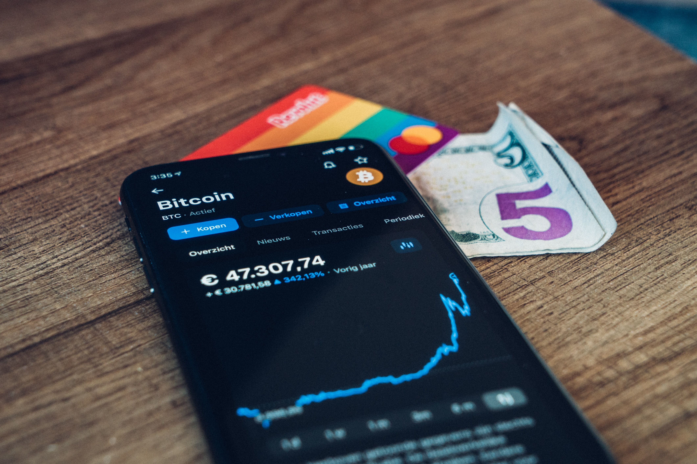

- 비트코인의 미래
- 블록체인
- 메타버스
1. 비트코인의 미래

① 암호화폐?
: 누군가의 감시에서 벗어나기 위해 만들어진 것. 즉 현금의 익명성은 가지고 있지만 정부에서 발행하지 않은 현금
이는 약간의 코드로 만들어졌고 네티즌들에 의해 운영되며 신뢰할 수 있는 화폐이다
오늘날, 원하는 사람은 누구나 암호화폐를 살 수 있다.
② 지난 2012년 광풍때와 다른 점
:최근 너무 단기간 급상승하긴 했지만 3년 전과는 다른 양상.
Ⓐ 금을 이긴 안전자산으로의 위상 격상
: 지금 같은 시장에서는 사실상 진정한 의미에서의 안전자산이 없음(원래는 채권, 금, 달러가 안전자산)
Ⓑ 기관들의 움직임이 다르다
: 그동안 기피하고 있던 기관들이 상반기부터 상당히 공격적으로 투자를 시작했다. 기관들이 움직이기 시작하면 수급에 영향을 미친까 관심없어도 눈 여겨 봐한다. 이렇게 되면 조금 더 보수적인 기관들도 따라가기 시작하고 언젠가는 제도권에 정착.
Ⓒ 제도권 진입을 암시하는 중요한 사건(milestone)
: 2020.10 Paypal에서 비트코인(+다른 크립토) 결제 가능하다고 발표, Square 같은 다른 테크/유사기업들도 재정상태표(balance sheet)에 현금성 자산(cash reserve)을 비트코인 형태로 (일부)보유하고 있다고 발표.
Ⓓ 결국엔 수급에 의한 매매가격의 형성
Ⓔ IB(미국 대형투자은행)들의 본격적인 셀링
: 몇 년 전까지만 해도 코인 트레이딩에 굉장히 부정적이었지만 최근엔 크립토 전담팀까지 만들어서 키우고 있음. 최근 씨티그룹 애널리스트가 내년엔 달러가치가 20%이상 하락할 것이고, 비트코인은 “21세기형 금”이라면서 내년(2021) 12월에 32만불(한화 3억 6천만원)까지 간다고 말함.
JPM같은 경우는 아예 Onyx라고 100명 정도되는 크립토 전문 팀을 만들었음. 이런식으로 대기업수요가 커지면 커질수록 시장에 서포트가 생기니까 눈여겨볼 포인트!
이런식으로 투자기관들도 받아들이기 시작하고, 대기업들도 상용하기 시작하면 SEC(미국증시규제한느곳)도 강제로라도 리뷰를 하게될거고 그럼 조만간 Bitcoin ETF가 나올날도 머지 않았음.
Ⓕ 바이든 정권 버프
: 이들이 추구하는 정책이 SUPER 양적완화(중앙은행에서 대규모로 돈을 발행,그리고 현금의 반대 자산인 부동산/주식/원자재등의 실물자산의 가치가 상승) + 초저금리 유지 + 인플레이션(통화량이 팽창하여 화폐가치가 떨어지고 물가가 계속적으로 올라 일반 대중의 실질적 소득이 감소하는 현상)용인함, 옐런같은 경우 비트코인에 대해서 오래전부터 비판적인걸로 유명하지만 어찌됐든 비트코인 수요에 대해서는 이들의 정책방향은 호재 게다가 미국은 내년부터 주식양도세를 많게는 2배까지 인상할거라 하니까, 대체투자로서의 비트코인 수요는 더 늘어날겁니다.
물론 모두가 태세전환을 한 건 아님! 레이달리오<헤지펀드 브리지워터 창립자>는 매우 부정적인 입장!
하지만 비트코인은 언젠가는 메인스트림에 입성이 될 거고 타이밍의 문제이지 되고 안 되고의 문제는 아니다. 4착혁명의 신호탄은 이미 솟아올랐다.
그 예시로
• 2021. 2. 8. 테슬라의 $1.5B 규모의 비트코인 투자 발표(가장 크게 작동한 사건)
: 테슬라 Balance sheet에 비트코인이 자산으로서 포함된다는 것, 언젠가는 테슬라 차도 비트코인으로 결제하게 될 수도 있다는 것(3월 이미 그렇게 됨)
• 2021. 2. 10. Mastercard 가맹점들에게 암호화폐 결제 옵션 도입할 것이라고 발표.